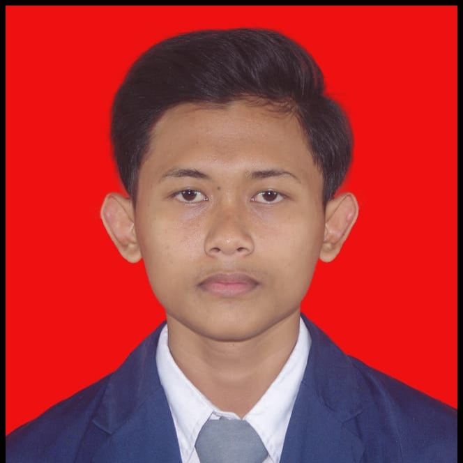

Fresh Graduate PPLG (Pengembangan Perangkat Lunak dan Gim)
Lulusan SMK jurusan Pengembangan Perangkat Lunak dan Gim dengan pengalaman Praktik Kerja Lapangan (PKL) di Kementerian Agama Kabupaten Cianjur. Terbiasa menggunakan komputer untuk pekerjaan administrasi, pengolahan data, dan aplikasi perkantoran. Teliti, disiplin, dan cepat belajar.
Siap bekerja di bidang administrasi atau staf kantor dengan memanfaatkan kemampuan komputer dan pengolahan data yang dimiliki.
SMK Negeri 1 Karangtengah — PPLG (2023–2026)
Email: kirafsya14@gmail.com
WhatsApp: 083817101208
Download dan Lihat CV